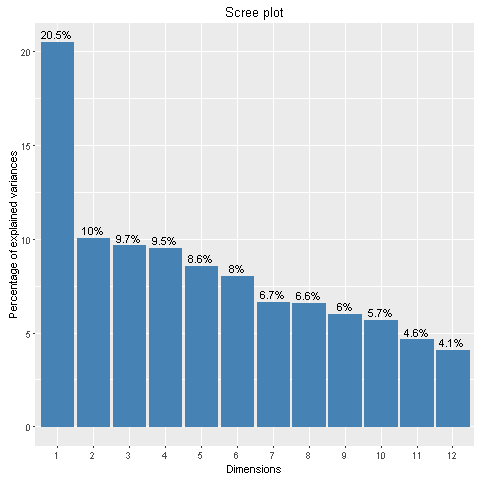
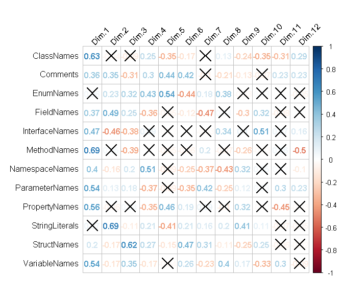

Bug localization in C#
This page contains the online appendix to the paper
“On the Influence of Program Constructs
on Bug Localization Effectiveness:
A Study of 20 C# Projects”
.
Dataset
Programs and data used in the experiments — issues, commits,
and preprocessed source files — are available at the
Replication page.
Results
RQ1: Are BLUiR, BLUiR+, and AmaLgam effective
to locate bugs in C# projects?
Without dataset preparation steps
Summarized results
With dataset preparation steps
Summarized results
Statistical tests
Complete results
RQ2: Does the addition of more program constructs increase the
effectiveness of bug localization on C# projects?
Summarized results
Statistical tests
Complete results (with AmaLgam)
RQ3: Which program constructs contribute most to the effectiveness
of bug localization in C# projects?
|

|

|
| Figure 4 – Variance corresponding to each principal component |
Figure 5 – Correlation between variables and principal components |
Input data and partial results
RQ4: Does the effectiveness of bug localization increase with the
suppression of constructs with the lowest contributions?
Summarized results
Statistical tests
RQ5: Does the effectiveness of bug localization increase with the
emphasis on constructs with the highest contributions?
Summarized results (single weights)
Summarized results (combined weights)
Statistical tests
Contact
If you have questions, please contact
Marcelo Garnier.